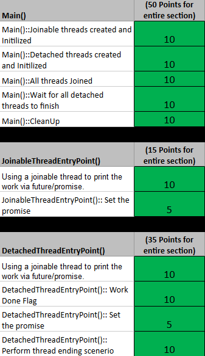
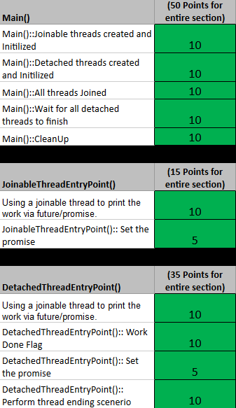

Thread Types - Lab
Objective
Threads have two different modes of execution: joinable and detached. Your goal is to run multiple threads of both types at the same time, have them perform some work, print data in a separate thread and get them to synchronize and communicate with main in a thread safe manner.
Table of Contents
Outcomes
Upon completion of this activity, students should be able to...- Create and use joinable Threads
- Create and use detached Threads
- Create and use Promise/Future
Level of Effort
This activity should take approximately 225m to complete. It will require:
- 30m Research
- 15m Prep & Delivery
- 180m Work
If you find that this activity takes you significantly less or more time than this estimate, please contact the teacher for guidance.
Instructions
The program as delivered to you takes one argument in the following form:
Usage: ThreadTypes threadCount
Arguments:
threadCount
Number of threads to create for each type.
You will be creating multiple joinable and detached threads, referred to as the 'worker' threads, to asynchronously perform some arbitrary amount of work. The joinable threads will generate all of their work and eventually end. The detached threads, however, will not end by themselves. Once you've guaranteed that the joinable threads have finished performing their work you'll need to signal the detached threads to stop working, i.e., make the detached threads break out of their infinite loop. You will accomplish this via a shared flag that all detached threads will have access to.
In addition to creating the worker threads in main, you'll need to have each of the worker threads create their own joinable thread, referred to as the 'printer' thread, which will be used to print the generated work. To do this you will need to create a printer thread at the beginning of each worker thread. The printer thread will be in charge of printing out the value generated by the worker thread, but it must wait until the work value has actually been generated before printing it. This will be accomplished by using a promise. Make sure the printer thread has finished before the worker thread ends.
Student Project Tasks (TODOs)
Students will create and use joinable threads, detached threads and promises.
- Create joinable and detached worker threads.
- Create joinable printer threads within the worker threads.
- Print the work generated by worker threads once it's generated.
- Wait for all joinable threads to finish.
- Set the exit flag for detached threads.
- Wait for all detached threads to finish.
- Cleanup in main.
Rubric
 
Frequently Asked Questions
Q: How do I make a detached thread?
A: You must call detach on the thread you want to detach. The thread object no longer represents a thread of execution after it's detached so there is no reason to keep it around.
Code Conventions
The grader of the lab will enforce some or all of these conventions by penalizing any violations.
- No global, static or atomic types
- No memory leaks
Deliverables
Deliverable File(s) and Contents
You will upload a compressed (Zipped) file named ThreadTypes.zip which should include:
NOTE: Do not simply move all of the files to the same directory and zip it up. This will break your visual studio solution.
| Part | File Name | Format | Notes |
|---|---|---|---|
| Solution | .\ThreadTypes.sln |
.sln | Visual Studio solution |
| Project |
.\ThreadTypes\ThreadTypes.vcxproj |
.vcxproj |
Visual Studio project |
| Project Filters |
.\ThreadTypes\ThreadTypes.vcxproj.filters |
.filters |
Visual Studio project filters |
| Source |
.\ThreadTypes\main.cpp |
.cpp |
Your code |